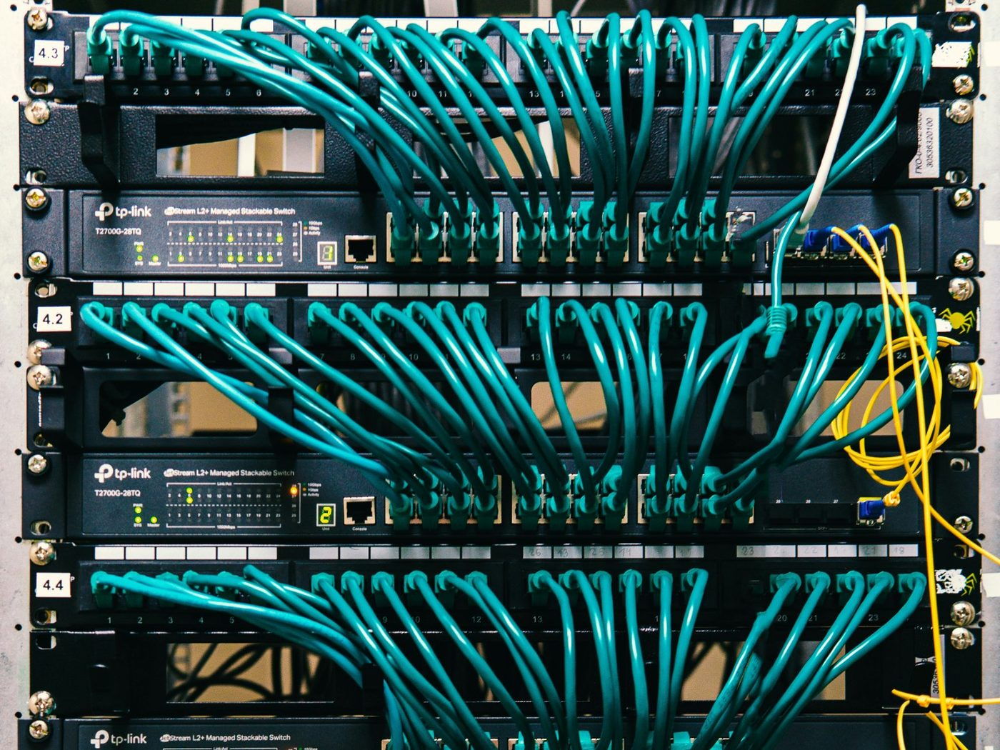

In today's connected business environment, a reliable network is essential. From everyday internet access and cloud-based applications to VoIP phone systems, security cameras, and video conferencing, nearly every aspect of modern business depends on dependable connectivity.
While wireless networking offers convenience, professionally installed Ethernet wiring remains one of the most important foundations of a high-performance commercial network.
Whether you're building a new office in downtown Denver, expanding a business in Cherry Creek, or upgrading network infrastructure in Lakewood, the right cabling system can improve reliability, simplify management, and prepare your business for future technology needs.
At Wired Up Solutions, we specialize in commercial Ethernet wiring and structured cabling installation throughout Denver, Colorado, and surrounding communities.
We design and install professional network infrastructure that supports the way your business operates today while preparing for tomorrow.
1. Why Ethernet Wiring Is Important for Modern Businesses
Businesses rely on an increasing number of connected devices.
Computers, printers, servers, wireless access points, security cameras, conference room systems, and VoIP phones all require network connectivity.
Although Wi-Fi is convenient, wireless connections are affected by signal strength, interference, network congestion, and building construction.
Hardwired Ethernet connections offer several important advantages.
Reliable Connectivity
Ethernet connections provide a dedicated physical connection between network devices and switching equipment.
Unlike Wi-Fi, wired connections are not affected by radio-frequency interference or wireless signal obstacles.
Consistent Network Performance
Properly installed Ethernet cabling can support high-speed data transmission with low latency and predictable performance.
This is especially valuable for business applications requiring dependable connectivity.
Improved Network Security
Wired networking can reduce exposure to certain wireless-specific risks, although proper network configuration, access controls, and cybersecurity practices remain essential.
Support for Connected Business Technology
A professionally installed wired network provides connectivity for:
- Workstations and office computers
- Servers and network storage
- Security camera systems
- VoIP telephone systems
- Wireless access points
- Commercial audio and video systems
- Printers and network peripherals
- Smart building technology
For many businesses, Ethernet wiring is the backbone of daily operations.
2. Cat6 vs. Cat6A: Which Ethernet Cable Is Best for Your Business?
One of the most common questions businesses ask when planning a network installation is whether to choose Cat6 or Cat6A cabling.
Both are popular options for modern commercial network installations, but they have different performance characteristics.
Cat6 Ethernet Cabling
Category 6 cabling is commonly used in office and commercial network installations.
Key Features:
- Supports 1 Gigabit Ethernet up to 100 meters
- Can support 10 Gigabit Ethernet over shorter distances, depending on installation conditions
- Suitable for many standard office applications
- Commonly used for computers, printers, VoIP phones, and wireless access points
- Often more economical and easier to install than Cat6A
Cat6 is a practical choice for many small and medium-sized businesses.
Cat6A Ethernet Cabling
Category 6A cabling is designed to support higher-frequency transmission and improved performance for 10 Gigabit Ethernet applications.
Key Features:
- Supports 10 Gigabit Ethernet up to 100 meters
- Improved resistance to alien crosstalk
- Well suited for high-bandwidth network applications
- Useful for businesses planning long-term infrastructure upgrades
- Commonly selected for demanding commercial environments
Cat6A cable is generally thicker and requires compatible components and appropriate installation practices.
Which Should You Choose?
The right choice depends on your business's bandwidth requirements, network equipment, cable distances, installation environment, and future expansion plans.
At Wired Up Solutions, we evaluate these factors and recommend an appropriate cabling solution.
3. What Is Structured Cabling?
Structured cabling is an organized approach to designing and installing a building's communications infrastructure.
Instead of running cables without a consistent layout or documentation, structured cabling uses standardized pathways, termination points, equipment locations, and labeling practices.
A properly designed structured cabling system makes the network easier to manage, troubleshoot, and expand.
Components of a Structured Cabling System
- Horizontal Cabling: Ethernet cabling connecting individual work areas and devices to telecommunications rooms or distribution points.
- Patch Panels: Centralized termination hardware that organizes network connections and simplifies changes.
- Network Racks: Equipment racks that house switches, patch panels, routers, and other networking hardware.
- Data Outlets: Wall-mounted or furniture-integrated Ethernet connections for workstations and devices.
- Backbone Cabling: Connections between network rooms, floors, or buildings, often using fiber optic cabling where appropriate.
- Cable Management: Organized routing, labeling, and physical protection for network cables.
For businesses planning new construction or office renovations, structured cabling should be considered early in the design process.
4. The Benefits of Professionally Installed Ethernet Wiring
Professional Ethernet installation involves more than pulling cables through walls.
Correct installation practices help protect network performance and simplify future maintenance.
Proper Cable Routing
Ethernet cabling should be routed with appropriate separation from electrical wiring and other potential sources of interference.
Cable pathways must also account for building conditions and applicable installation requirements.
Correct Cable Termination
Properly terminated network connections help minimize performance problems and intermittent connectivity.
Cable Testing and Certification
Network cabling should be tested to verify installation quality.
Basic verification confirms wiring continuity and pinout, while qualification and certification testing provide additional information about supported network performance and compliance with cabling standards.
Organized Network Infrastructure
Proper labeling and cable management make troubleshooting, equipment replacement, and network expansion easier.
Long-Term Scalability
A structured approach allows businesses to plan for additional workstations, wireless access points, security cameras, and connected equipment.
5. Why Hardwired Wireless Access Points Improve Business Wi-Fi
Many businesses experience poor Wi-Fi performance because they rely on inadequate wireless coverage or improperly positioned equipment.
A professionally designed wireless network often uses multiple access points connected through Ethernet cabling.
Benefits of Hardwired Access Points
- Improved Coverage: Strategically positioned access points can provide more consistent wireless connectivity throughout an office or commercial facility.
- Reduced Wireless Backhaul Congestion: Using Ethernet for access point backhaul avoids consuming additional wireless airtime for connections between access points.
- Centralized Network Management: Compatible systems allow administrators to manage multiple wireless access points from a centralized interface.
- Power over Ethernet: Many business access points support PoE, allowing compatible network switches to deliver power and data through a single Ethernet cable.
For larger offices, warehouses, restaurants, and multi-floor commercial buildings, hardwired wireless access points can be an important part of a reliable Wi-Fi design.
6. Power over Ethernet: One Cable for Data and Power
Power over Ethernet, commonly called PoE, allows compatible devices to receive electrical power and network connectivity through Ethernet cabling.
This technology is widely used in modern commercial environments.
Common PoE Applications
- Security Cameras: PoE cameras can receive power and data through a single cable, simplifying installation.
- VoIP Phones: Compatible business phones can operate without separate power adapters.
- Wireless Access Points: PoE makes it easier to install access points in optimal locations.
- Access Control Systems: Compatible door controllers, readers, and related devices may use PoE connectivity.
- Smart Building Devices: Certain sensors, controllers, and building management devices can use PoE.
Why PoE Matters
PoE can reduce the need for separate power outlets near compatible devices.
However, proper planning is essential.
Cable type, installation conditions, switch power budgets, device requirements, and applicable PoE standards must all be considered.
At Wired Up Solutions, we help businesses plan Ethernet infrastructure that supports compatible PoE devices.
7. Network Racks, Patch Panels, and Cable Management
A disorganized network closet can make even simple troubleshooting difficult.
Properly designed network racks and patch panels help create a professional and maintainable network installation.

Benefits of Organized Network Equipment
- Easier cable identification
- Simplified troubleshooting
- Better equipment accessibility
- More efficient maintenance
- Improved planning for future expansion
- Cleaner installation appearance
For growing businesses, organized network infrastructure can reduce the complexity of adding devices and upgrading equipment.
Wired Up Solutions designs clean, labeled network installations suited to the available space and equipment requirements.
8. Ethernet Wiring for New Construction and Office Renovations
Planning network infrastructure during construction or renovation offers several advantages.
New Commercial Construction
Installing low-voltage cabling before walls and ceilings are finished can simplify routing and reduce future modifications.
Important planning considerations include:
- Workstation locations
- Conference room connectivity
- Wireless access point placement
- Security camera locations
- VoIP telephone connections
- Network equipment rooms
- Future expansion requirements
Existing Office Network Upgrades
Older commercial properties may contain outdated cabling, insufficient network outlets, or poorly organized infrastructure.
Upgrading Ethernet wiring can help address these limitations.
Depending on building conditions, new cables may be routed through accessible ceilings, walls, conduit, or other approved pathways.
At Wired Up Solutions, we evaluate the building and recommend practical installation methods.
9. Commercial Ethernet Wiring for Different Types of Businesses
Different commercial environments require different network designs.
Corporate Offices
Structured cabling supports workstations, conference rooms, printers, VoIP phones, and network equipment.
Coworking Spaces
Shared office environments may require extensive Ethernet connectivity, reliable Wi-Fi access points, and segmented networks for different users.
Restaurants and Retail Stores
Network infrastructure supports point-of-sale systems, security cameras, wireless connectivity, and digital signage.
Warehouses
Large commercial facilities may require strategically positioned network equipment, wireless access points, and security cameras.
Medical and Professional Offices
Reliable cabling supports connected equipment and business applications. Additional privacy and regulatory requirements may apply depending on the organization.
Multi-Tenant Commercial Buildings
Structured cabling can provide organized connectivity for individual tenants and shared building systems.
Wired Up Solutions designs commercial network infrastructure around each property's operational requirements.
10. How Much Does Commercial Ethernet Wiring Cost in Denver?
The cost of professional Ethernet wiring depends on the size of the property, cabling requirements, and installation complexity.
Factors affecting pricing include:
- Number of Ethernet drops
- Cat6 versus Cat6A cable selection
- Cable run lengths
- Ceiling and wall accessibility
- Conduit and cable pathway requirements
- Patch panels and network racks
- Testing and certification requirements
- Building construction conditions
- Network equipment requirements
- Future expansion planning
A small office requiring several Ethernet connections will typically involve a different investment than a multi-floor commercial structured cabling project.
At Wired Up Solutions, we evaluate your requirements and recommend an appropriate network infrastructure solution. Contact us to discuss your project.
11. Frequently Asked Questions About Commercial Ethernet Wiring
Is Ethernet Faster Than Wi-Fi?
Ethernet often provides more consistent throughput and lower latency than Wi-Fi, although actual speeds depend on network equipment, cable category, wireless technology, and connection conditions.
Is Cat6 Good Enough for a Business?
Yes. Cat6 supports many common business networking requirements. Cat6A may be preferable when 10 Gigabit Ethernet over longer distances is a priority.
How Far Can Ethernet Cable Run?
Standard twisted-pair Ethernet cabling commonly supports a maximum channel length of 100 meters, including patch cords, for supported applications.
Can Ethernet Cables Power Security Cameras?
Yes. Compatible PoE switches or injectors can deliver power and data to PoE-enabled cameras through Ethernet cabling.
Can You Add Ethernet Wiring to an Existing Office?
Yes. Many existing commercial buildings can accommodate additional Ethernet cabling, depending on available pathways and construction conditions.
Should Businesses Use Wired or Wireless Networks?
Most businesses benefit from a combination of wired and wireless networking. Hardwired connections support critical equipment, while Wi-Fi provides mobility and convenience.
Professional Commercial Ethernet Wiring in Denver, Colorado
Your business network is only as reliable as the infrastructure supporting it.
Whether you're building a new office, expanding your business, upgrading outdated cabling, or installing additional network-connected equipment, professional Ethernet wiring can provide a dependable foundation.
At Wired Up Solutions, we specialize in commercial Ethernet wiring, structured cabling, and network infrastructure installation.
Our services include:
- Cat6 and Cat6A Ethernet installation
- Structured cabling systems
- Network racks and patch panels
- Cable management and labeling
- Hardwired wireless access points
- PoE network infrastructure
- Network cabling upgrades
- Commercial low-voltage installation
We serve businesses throughout Denver, Cherry Creek, Lakewood, Golden, Arvada, Littleton, and surrounding Colorado communities.